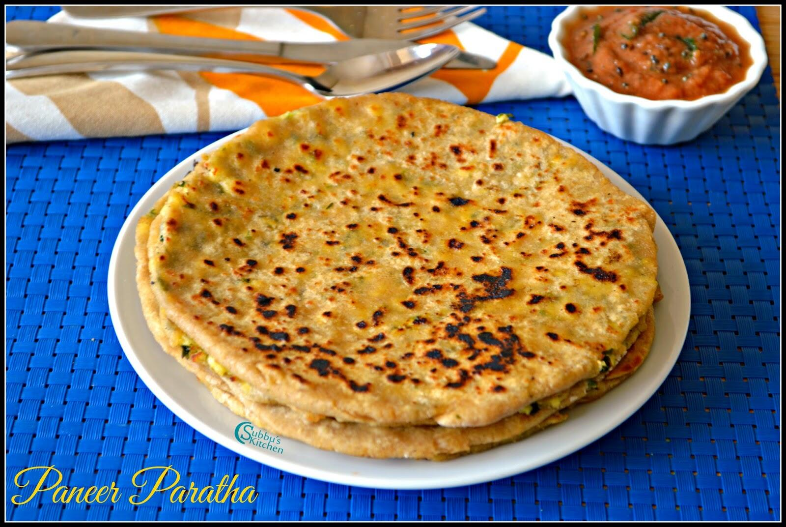

Paneer Paratha

Flat, soft and healthy paneer paratha.
Ingredients
- 2 cups whole wheat flour (for dough)
- 200–250 g paneer (grated)
- 1 medium onion (finely chopped, optional)
- 1–2 green chilies (finely chopped)
- 2 tbsp fresh coriander leaves (chopped)
- ½ tsp cumin powder
- ½ tsp garam masala
- ½ tsp chili powder (optional)
- Salt (to taste)
- Water (for kneading dough)
- Ghee or oil (for roasting)
Steps
- Prepare the dough: In a mixing bowl, add whole wheat flour, a pinch of salt, and water gradually. Knead into a smooth, soft dough (similar to roti dough). Cover and let it rest for 20–30 minutes.
- Make the stuffing: In another bowl, add grated paneer, chopped onions, green chilies, coriander leaves, cumin powder, garam masala, chili powder, and salt. Mix everything gently to form a uniform stuffin..
- Roll out the dough: Divide the dough into medium-sized balls. Roll out one ball into a small circle (like a puri).
- Add the stuffing: Place 2–3 tablespoons of paneer mixture in the center of the rolled dough. Bring the edges together and pinch to seal it like a pouch.
- Flatten and roll: Dust with flour and gently roll it out into a flat paratha (about 6–7 inches wide). Roll lightly so the stuffing doesn’t spill out.
- Cook the paratha: Heat a tawa (flat pan). Place the paratha on it and cook until bubbles form. Flip, apply ghee or oil, and cook both sides until golden brown spots appear.
- Serve hot: Stack them up and serve with yogurt, butter, or pickle on the side.
Home